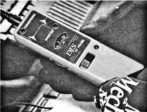

Диагностика системы зажиганияИл. 8.1. Инструмент и оснащение, необходимые для проверки исправности вторичной цепи системы зажигания: клещи для снятия защитного колпачка высоковольтного провода со свечи зажигания, искровой пробник, приборы для изменения напряжения во вторичной цепи зажигания, индикаторная лампочка-пробник, короткие (длиной по 2 дюйма) отрезки вакуумного шланга диаметром 5/32 дюйма и защитные перчатки для защиты рук от ожогов при работе в непосредственной близости от горячих узлов системы выпуска отработавших газов Ил. 8.2. Первая операция диагностики системы зажигания — проверка достаточности выходного напряжения катушки (катушек) зажигания Ил. 8.3. Подсоедините искровой пробник к концу высоковольтного провода свечи зажигания и с помощью пружинного зажима соедините с "массой" автомобиля. Заведите двигатель и наблюдайте за искровым пробником. В его разрядном промежутке должна появиться непрерывная искра, что служит признаком того, что высокое напряжение на выходе системы зажигания не ниже 25 кВ Ил. 8.4. Неисправности двигателя, так же как неисправности системы зажигания, часто можно выявить путем измерения высокого напряжения с помощью высоковольтного тестера, например, такого, как показанный на этой фотографии прибор из набора, выпускаемого компанией Snap-On. Подсоедините земляной зажим тестера на "массу" автомобиля, а зажимом измерительного щупа охватите высоковольтный провод катушки зажигания Ил. 8.5. Заведите двигатель и поворачивайте регулировочную ручку на приборе до тех пор, пока светодиод на панели прибора не перестанет мигать. Как только это произойдет, зафиксируйте показание на измерительной шкале прибора. Напряжение зажигания в этом цилиндре по показанию прибора находится в пределах 12-13 кВ при нормальном характере пробоя, т.е. в пределах нормы (от 5 до 15 кВ) Ил. 8.6. Напряжение зажигания в этом цилиндре по показанию прибора составляет примерно 8 кВ из-за искры обратной полярности в другом цилиндре, в котором включена парная свеча. Измеренное напряжение зажигания указывает на то, что, возможно, разрядный промежуток слишком узок, или на то, что свеча зажигания забрызгана маслом Ил. 8.7. Еще один тестер, который используется для измерения высоковольтного напряжения, — из набора, выпускаемого компанией ОТС. Для проведения измерения подсоедините зажим заземления тестера на "массу" автомобиля, а клещи пробника наденьте на высоковольтный провод катушки зажигания Ил. 8.8. Заведите двигатель и переключите тестер в режим измерения "spark kV". В этом режиме измерения индикатор прибора показывает напряжение, необходимое для пробоя разрядного промежутка свечи зажигания, которое в данном примере составляет 16,4 кВ. Это напряжение превышает нормальное, что может быть связано с повышенным сопротивлением высоковольтного провода катушки зажигания или слишком широким разрядным промежутком между электродами свечи зажигания Ил. 8.9. Переключите тестер в режим измерения "burn kV". Тестер показывает напряжение 1,9 кВ. Это напряжение, необходимое для горения искры после ее зажигания. Для большинства автомобилей это напряжение должно быть менее 2 кВ Ил. 8.10. Переключите тестер в режим "burn time". Показание индикатора составляет 1,2 мс. Это продолжительность горения искры зажигания — она должна находиться в пределах от 1 до 2 мс Ил. 8.11. Поочередно отключайте зажигание цилиндров и следите за тем, как при этом изменяется скорость вращения двигателя и характер его работы на холостом ходу. Если при отключении зажигания какого-либо из цилиндров режим работы двигателя не изменяется, это указывает на неисправность, связанную с этим цилиндром. Отключайте зажигание цилиндров с помощью вставки вакуумного шланга двухдюймовой длины между защитным колпачком высоковольтного провода и гнездом высоковольтной клеммы катушки зажигания. Эта проверка подходит также для испытания систем зажигания с механическим распределителем зажигания Ил. 8.12. Прикоснитесь щупом индикаторной лампочки-пробника, подключенной на "массу" автомобиля, к стенке вакуумного шланга. Высокое напряжение будет уходить через пробник на "массу" автомобиля и искра в этом цилиндре возникать не будет. Это несложный тест, и для его выполнения не требуется дорогостоящего испытательного оборудования. Времени на него уходит немного, но он помогает локализовать неисправный цилиндр |